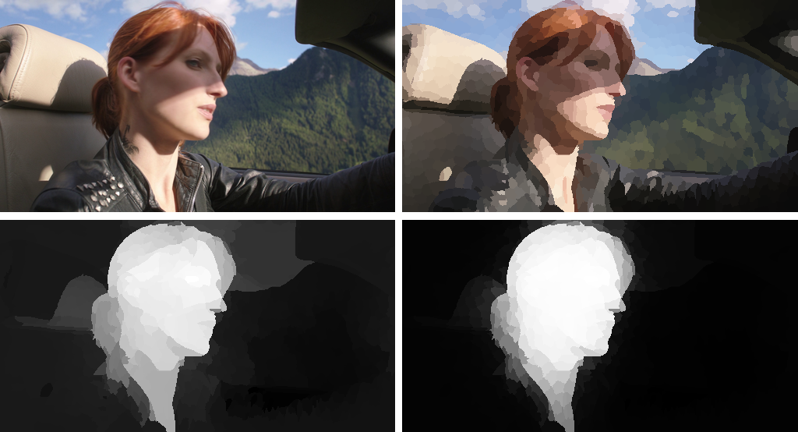
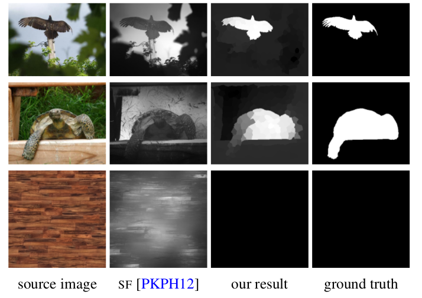

Efficient Salient Foreground Detection for Images and Video using Fiedler Vectors
1,2Federico Perazzi 1Olga Sorkine-Hornung 2Alexander Sorkine-Hornung
1ETH Zurich 2Disney Research Zurich

Figure 1. Saliency results on video. Top left: input video frame. Top right: superpixel segmentation. Bottom left: our per-frame saliency. Bottom right: final, temporally coherent saliency. Note how spurious, salient background elements on the car and sky are removed
Abstract
Automatic detection of salient image regions is a useful tool with applications in intelligent camera control, virtual cinematography, video summarization and editing, evaluation of viewer preferences, and many others. This paper presents an effective method for detecting potentially salient foreground regions. Salient regions are identified by eigenvalue analysis of a graph Laplacian that is defined over the color similarity of image superpixels, under the assumption that the majority of pixels on the image boundary show non-salient background. In contrast to previous methods based on graph-cuts or graph partitioning, our method provides continuously-valued saliency estimates with complementary properties to recently proposed color contrast-based approaches. Moreover, exploiting discriminative properties of the Fiedler vector, we devise an SVM-based classifier that allows us to determine whether an image contains any salient objects at all, a problem that has been largely neglected in previous works. We also describe how the per-frame saliency detection can be extended to improve its spatiotemporal coherence when computed on video sequences. Extensive evaluation on several datasets demonstrates and validates the state-of-the-art performance of the proposed method.

Figure 2. Saliency computation based on concepts such as global contrast and color uniqueness is less suitable for multi-colored objects (first row), multiple unique colors (second row), and cases where fore- and background are rather similar (third row). The second column shows corresponding saliency maps computed with a representative method based on various contrast measures [PKPH12]. Our approach successfully handles such challenging cases and produces results closer to ground truth. Moreover, a unique feature of our approach is its ability to identify whether an image contains any salient object at all (bottom row).
Introduction
In this paper we propose a highly effective method for computational saliency estimation, Our algorithm is based on the basic assumption that most of the image boundaries are covered by non-salient background. Background color priors and local color similarities are encoded in a graph structure defined over a superpixel segmentation of images or video frames. We then show that the Fiedler vector of the corresponding graph Laplacian is a very effective and robust way to compute saliency masks. In particular, our formulation allows us to determine whether a salient object is present at all by training a support vector machine using properties of the Fiedler vector. This problem has largely been neglected in previous works, which always highlight some regions as salient, even if an image contains background only. In addition, differently from previous approaches that use various heuristics or graph-cut segmentation to binarize saliency maps, the entries of the Fiedler vector yield both a continuous estimate and a content-adaptive binary partition. Finally, we describe an extension of the per-frame saliency detection to video, which improves the spatiotemporal coherence of the results. Despite its computational simplicity, we show in our examples and evaluation that our method compares favorably to the recent methods and efficiently handles various image and video types that are challenging for previous approaches. To demonstrate the complementary nature of our method, we also show that the performance can be further increased when combining our approach with a recent color contrast-based technique.
Citation - BibTeX
Federico Perazzi, Olga Sorkine Hornung, Alexander Sorkine-Hornung. Efficient Salient Foreground Detection for Images and Video using Fiedler Vectors. Eurographics Workshop on Intelligent Cinematography and Editing, Zurich, Switzerland, May 5th, 2015. [ Pdf 7.7MB ][ BibTeX ]